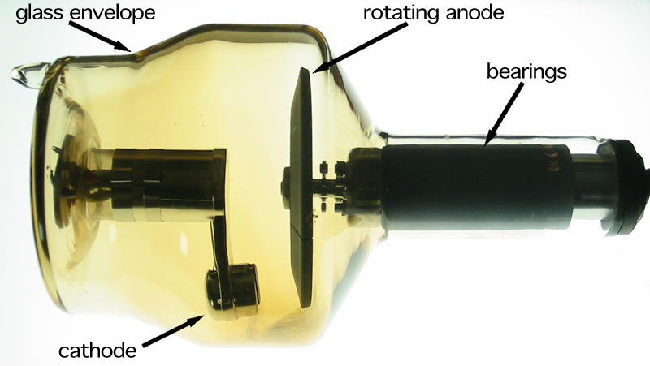

Equipments
X-ray Tube
An X-ray tube is a vacuum tube that produces X-rays. They are used in X-ray generators. X-rays are part of the electromagnetic spectrum, an ionizing radiation with wavelengths shorter than ultraviolet light. X-ray tubes evolved from experimental Crookes tubes with which X-rays were first discovered in the late 19th century, by Wilhelm Röntgen and the availability of this controllable source of X-rays created the field of radiography, the imaging of opaque objects with penetrating radiation. X-ray tubes are also used in CAT scanners, airport luggage scanners, X-ray crystallography, and for industrial inspection.

Modern equipments